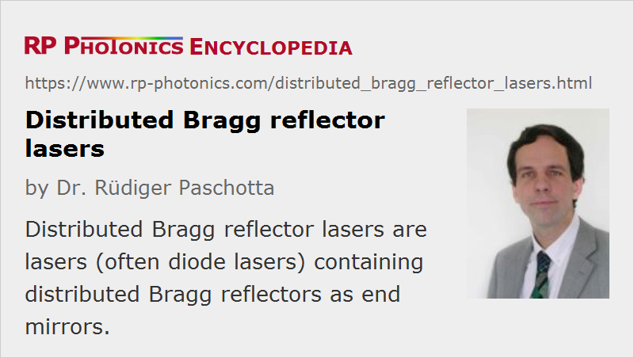

Distributed Bragg Reflector Lasers
Acronym: DBR laser
Definition: lasers containing distributed Bragg reflectors as end mirrors
More general terms: lasers
Categories: fiber optics and waveguides, optoelectronics, lasers
How to cite the article; suggest additional literature
Author: Dr. Rüdiger Paschotta
A distributed Bragg reflector laser is a laser, where the laser resonator is made with at least one distributed Bragg reflector (DBR) outside the gain medium (the active region). A DBR is a Bragg mirror, i.e., a light-reflecting device (a mirror) based on Bragg reflection at a periodic structure. In most cases, the Bragg mirror is more specifically a quarter-wave mirror, providing the maximum amount of reflection for the given number of layers.
Lasers of DBR type are usually laser diodes, but the term is also sometimes used for fiber lasers containing fiber Bragg gratings. Both laser types are described below. Most solid-state bulk lasers actually also use laser mirrors which are Bragg mirrors; nevertheless such lasers are not called DBR lasers.
A DBR laser is different from a distributed feedback laser, where the whole active medium is embedded in a single distributed reflector structure.
DBR Laser Diodes
A DBR laser diode contains some corrugated waveguide structure (a grating section) providing wavelength-dependent feedback to define the emission wavelength. Another section of the laser waveguide acts as the amplifying medium (active region), and the other end of the resonator may have another DBR.
DBR laser diodes are usually single-frequency lasers with diffraction-limited output, and often they are wavelength-tunable (→ tunable lasers). Tuning within the free spectral range of the laser resonator may be accomplished with a separate phase section, which can e.g. be electrically heated, or simply by varying the temperature of the gain region via the drive current. If the temperature of the whole device is varied, the wavelength response is significantly smaller than for an ordinary single-mode laser diode, since the reflection band of the grating is shifted less than the gain maximum. Electro-optic tuning can also be accomplished. Mode-hop free tuning over a larger wavelength region is possible by coordinated tuning of the Bragg grating and the gain structure.
There are more sophisticated device designs, exploiting a kind of Vernier effect with sampled gratings (SG-DBR laser), that offer a tuning range as wide as e.g. 40 nm, although not without mode hops.
The linewidth of a DBR diode is typically a few megahertz. Due to the relatively short laser resonator, it is larger than that e.g. of an external-cavity diode laser.
There are MOPA structures where an additional amplifier section (a semiconductor optical amplifier) is placed on the same semiconductor chip. The actual DBR laser is then the seed laser. Output powers well above 100 mW can be achieved with such devices. It is also possible to directly generate high powers (> 10 W) with a broad-area laser diode having a surface Bragg grating within its resonator [10]. The emission may then no longer be in a single mode, but still with a relatively small bandwidth.
Vertical cavity surface-emitting lasers (VCSELs) are actually also distributed Bragg reflector lasers, even though the term “DBR laser diodes” is normally used for edge-emitting semiconductor lasers.
Applications of DBR laser diodes include optical fiber communications, free-space optical communications, laser cooling, optical metrology and sensors, and high-resolution laser spectroscopy. DBR lasers actually compete with external-cavity diode lasers (ECDLs), which also offer wavelength-tunable single-frequency output, with potentially better performance e.g. in terms of noise, but also requiring a significantly more complex setup. Chips containing DBR laser arrays can serve as very compact sources for use in wavelength division multiplexing systems.
DBR Fiber Lasers
A fiber laser of DBR type usually has a linear laser resonator formed by an active (rare-earth-doped) fiber between two fiber Bragg gratings. Compared with a fiber DFB laser, which consists of a single grating in a fiber with laser gain, a DBR fiber laser has a longer laser resonator and thus the potential for higher output power, higher power efficiency, and narrower linewidth. On the other hand, this can also lead to less robust single-frequency operation, or to multimode operation with a correspondingly much larger emission bandwidth. Single-frequency DBR fiber lasers offer similar output powers as DBR laser diodes: tens of milliwatts or sometimes > 100 mW.
Sampled grating designs, as described in the section on DBR laser diodes, can also be used in DBR fiber lasers. The tuning range achievable can again have a width of tens of nanometers.
Suppliers
The RP Photonics Buyer's Guide contains 8 suppliers for distributed Bragg reflector lasers. Among them:
Questions and Comments from Users
Here you can submit questions and comments. As far as they get accepted by the author, they will appear above this paragraph together with the author’s answer. The author will decide on acceptance based on certain criteria. Essentially, the issue must be of sufficiently broad interest.
Please do not enter personal data here; we would otherwise delete it soon. (See also our privacy declaration.) If you wish to receive personal feedback or consultancy from the author, please contact him e.g. via e-mail.
By submitting the information, you give your consent to the potential publication of your inputs on our website according to our rules. (If you later retract your consent, we will delete those inputs.) As your inputs are first reviewed by the author, they may be published with some delay.
Bibliography
| [1] | R. D. Dupuis and E. P. Dapkus, “Room-temperature operation of distributed-Bragg-confinement Ga1−xAlxAs-GaAs lasers grown by metalorganic chemical vapor deposition”, Appl. Phys. Lett. 33 (1), 68 (1978), doi:10.1063/1.90147 |
| [2] | M.-C. Amann et al., “Tunable twin-guide laser: a novel laser diode with improved tuning performance”, Appl. Phys. Lett. 54, 2532 (1989), doi:10.1063/1.101065 |
| [3] | G. A. Ball et al., “Modeling of short, single-frequency, fiber lasers in high-gain fiber”, IEEE Photon. Technol. Lett. 5 (6), 649 (1993), doi:10.1109/68.219698 |
| [4] | W. H. Loh et al., “High performance single frequency fiber grating-based erbium:ytterbium-codoped fiber lasers”, J. Lightwave Technol. 16 (1), 114 (1998), doi:10.1109/50.654992 |
| [5] | G. Morthier et al., “A λ/4-shifted sampled or superstructure grating widely tunable twin-guide laser”, IEEE Photon. Technol. Lett. 13 (10), 1052 (2001), doi:10.1109/68.950732 |
| [6] | L. A. Coldren et al., “Tunable semiconductor lasers: a tutorial”, J. Lightwave Technol. 22 (1), 193 (2004) |
| [7] | R. Todt et al., “Wide wavelength tuning of sampled grating tunable twin-guide laser diodes”, Electron. Lett. 40, 1491 (2004), doi:10.1049/el:20046997 |
| [8] | R. Todt et al., “Sampled grating tunable twin-guide laser diodes with over 40-nm electronic tuning range”, IEEE Photon. Technol. Lett. 17 (12), 2514 (2005), doi:10.1109/LPT.2005.859155 |
| [9] | X. Xu et al., “Chirped and phase-sampled fiber Bragg grating for tunable DBR fiber laser”, Opt. Express 13 (10), 3877 (2005), doi:10.1364/OPEX.13.003877 |
| [10] | J. Fricke et al, “High-power 980-nm broad-area lasers spectrally stabilized by surface Bragg gratings”, IEEE Photon. Technol. Lett. 22 (5), 284 (2010), doi:10.1109/LPT.2009.2038792 |
See also: single-frequency lasers, wavelength tuning, tunable lasers, laser diodes, distributed feedback lasers, external-cavity diode lasers, fiber lasers, fiber Bragg gratings, Bragg mirrors
and other articles in the categories fiber optics and waveguides, optoelectronics, lasers
|  |
If you like this page, please share the link with your friends and colleagues, e.g. via social media:
These sharing buttons are implemented in a privacy-friendly way!